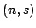
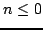
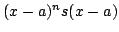
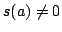

Usage
expandFraction a
expandFraction(a)(f)
Signature
expandFraction: R Fraction RX
| Parameter | Type | Description |
|---|---|---|
| a | R | the expansion point |
| f | Fraction RX | a rational function |
Returns
expandFraction(a)(f) returns  where  and the series expansion ofaround a is . In addition,  whenever
.
See Also
expand,tryExpandFraction